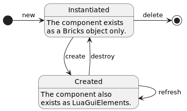

Module: GUI
Poly’s GUI module has three major features that simplify creating and managing GUIs:
Poly’s event handling is an easy-to-use registry for event handler functions, that are called to handle GUI events on GUI components and
LuaGuiElements.Poly’s GUI components are a convenient way to declaratively build GUIs. Although they are compatible with Factorio’s imperative style GUI API, they are most useful when the whole GUI is implemented using Poly.
Poly’s window manager helps to manage multiple windows, e.g., modal dialogs.
Although each part of Poly’s GUI API can be used in isolation, it is a good idea to let Poly handle all GUI related features in your mod. Feel free to contact me in case you have a scenario that Poly cannot handle fully and naturally.
See Full Example for an example GUI using all three features.
Note: Because Poly stores, e.g., class names as part of event handlers in Factorio’s global table, it is necessary to update these values when the mod is updated. The simplest way to do this is to (by default) delete all Poly GUIs when your mod is updated.
Event Handling
Poly’s event handler for GUI events is an easy way to register function calls (and optionally their arguments) with an id string. This enables Poly to associate GUI events on LuaGuiElement with handler functions, as a LuaGuiElement can only store primitive type values in its tags.
The Poly EventHandler provides three basic functions:
EventHandler:register(handler_table, function_name, ...)Registers a call to
handler_table:function_name(..., event)and returns an id for it.handler_tablecan be eithernil(iffunction_nameis the name of a globally available function), a Poly class, or an instance of a Poly class.function_nameis the name of the function to be called onhandler_tableas a string. All further arguments will be passed on to the handler function.
EventHandler:call(event_handler_id, event)Calls the previously registered event handler with id
event_handler_id. It passes as arguments the registered arguments followed by the passed inevent.
EventHandler:delete(event_handler)Deletes a previously registered event handler.
event_handlercan be either a single event handler id, an array of ids. Alternatively, a validLuaGuiElementcan be passed, deleting all event handlers referenced in its tags.
To associate a LuaGuiElement with an event handler, simply provide its event handler id in the elements tags in a table called Poly with the event’s name as its key, e.g.:
1-- register call to globally defined function handle_button_click(5)
2local id1 = EventHandler:register(nil, 'handle_button_click', 5)
3-- register call to my_object:handle_button_click(10)
4local my_object = MyHandlerClass:new()
5local id2 = EventHandler:register(my_object, 'handle_button_click', 10)
6-- register call to MyHandlerClass:handle_button_click(15)
7local id3 = EventHandler:register(MyHandlerClass, 'handle_button_click', 15)
8
9-- create a button on some previously defined frame
10local button = frame.add {
11 type = 'button', name = 'test_button',
12 tags = {
13 -- pass the registered event handlers to the LuaGuiElement by id
14 -- you can either pass a single id or an array containing multiple ids
15 Poly = { on_gui_click = { id1, id2, id3 } }
16 }
17}
This assumes that the various handler functions have been defined as follows:
1-- require Poly's Class API
2local Class = require('__poly__.Class')
3
4-- require Poly's EventHandler
5local EventHandler = require('__poly__.GUI.EventHandler')
6
7-- define globally available handler function
8function handle_button_click(value, event)
9 print('called global handle_button_click(' .. value .. ')')
10end
11
12-- define event handler class
13local MyHandlerClass = Class:new('MyHandlerClass')
14function MyHandlerClass:new()
15 return {}
16end
17function MyHandlerClass:handle_button_click(value, event)
18 print('called MyHandlerClass:handle_button_click(' .. value .. ')')
19end
Make sure to delete all event handlers of a LuaGuiElement before it is destroyed, e.g., by calling EventHandler:delete(button), to prevent orphaned event handlers.
Using Poly’s components makes it even easier to handle events, because components automatically create a LuaGuiElement’s tags and take care of deleting event handlers before their LuaGuiElements are destroyed.
Components
Components are the basic building block for Poly GUIs. They can be simple, e.g., a label or textfield, or complex, e.g., a window containing a table and three buttons.
Component Lifecycle
Key to using Poly components is to understand their lifecycle:
new: Creates a new instance of the component class (see Class Mechanism for details on classes). Note that the component’s
LuaGuiElements are not yet created.create: Creates the
LuaGuiElements visualizing the component. It is now in the Created state.refresh: Refreshes the created
LuaGuiElements with the current values from the component’s instance.destroy: Destroys the component’s
LuaGuiElements, moving it back to the Instantiated state. Again, just like after the new transition, the component no longer has any visibleLuaGuiElements.delete: Deletes the component instance.
Component Interface
Every Poly component (including the ones you define yourself) has to be (indirectly) derived from the Component class. Component provides default implementations for all lifecycle transitions, as well as some other functionality that is shared by all components. Custom components can override the default implementations (typically the new method to create a customized instance of the base component) and extend them with their own implementations. It should almost never be necessary to override something other than new.
Component provides the following interface:
Component:new(args):Initializes a component instance with an optional
args.name. All values inargswith numeric keys will be added as children to the component.
Component:create(parent):Creates the component’s
LuaGuiElements withparentas their parentLuaGuiElement(i.e. they are created usingparent.add { ... }. The default implementation simply passes this call to all children.
Component:refresh():Refreshes the component’s
LuaGuiElements. The default implementation simply passes this call to all children.
Component:destroy():Destroys the component’s
LuaGuiElements. The default implementation simply passes this call to all children.
Component:delete():Deletes the component instance. The default implementation simply passes this call to all children.
Component:get_state():Returns component’s current lifecycle state (either
Component.State.Instantiated` or ``Component.State.Created).
Component:get_name():Returns component’s
name.
Component:add_child(child):Adds
childto component’s children.
Component:get_child(index_or_name):Returns component’s
childwith index or nameindex_or_name. Alternatively, children with a name can be directly accessed using<component_instance>.<child_name>, e.g.,flow.my_buttonfor accessing a button with name “my_button” that was added toflow.
Component:get_children():Returns a read-only table containing all of component’s children.
Component:remove_child(index_or_name):Removes and returns component’s child with index or name
index_or_name. If the child component is currently in theComponent.State.Createdstate, the child will be destroyed before it is returned.
Component:delete_child(index_or_name):Same as
Component:remove_child(index_or_name), but additionally also callsdeleteon the child.
Component:clear_children():Deletes all of component’s children.
Note: The Component class provides implementations for adding children to a component, meaning all Poly components have that ability. This is similar to Factorio’s LuaGuiElement, where you can add children to, e.g., a label, as well. You can choose however to ignore those children in your custom component’s create implementation, if it does not make sense to add children to it.
Factorio Components
Poly provides pre-implemented components for all subtypes of LuaGuiElement. They are available under __poly__.GUI.Factorio and named after the subtype converted to camel case, e.g., component ChooseElemButton for subtype choose-elem-button.
The Factorio components have a straightforward interface, which makes them usable in a similar way to the built-in ones:
Their
newmethod takes all arguments that are listed under LuaGuiElement.add for the component’s subtype, e.g., flow’sdirection:Flow:new { direction = 'horizontal' }. Additionally, you can also pass any other of subtype’s writeable attributes that are not listed, e.g., flow’sdrag_target.They have a getter method called
<ComponentClass>:get_<attribute>for each attribute of the component’s subtype, as well as a setter called<ComponentClass>:set_<attribute>for the writeable attributes.The setter for a components
styleattribute (and alsonew) accepts style names (likeLuaGuiElements) as a string, as well as tables for modifying the styles directly, for example:-- sets label's style to the built-in 'caption_label': Label:new { style = 'caption_label' } -- keeps label's current style and sets style.width = 120 Label:new { style = { width = 120 } } -- sets label's style to the built-in 'caption_label' and additionally sets label's style.width = 120 Label:new { style = { 'caption_label', width = 120 } }
For Poly to be able to keep track of a component’s tags,
<ComponentClass>:get_tags()returns a read-only of the tags. To modify them, use methods<ComponentClass>:set_tags(tags),<ComponentClass>:update_tags(tags), and<ComponentClass>:delete_tags(tags).Most methods listed for LuaGuiElement can be called on components:
<ComponentClass>:<method_name>(...). Note that the component has to be inComponent.State.Created` state to be able to call ``LuaGuiElement’s methods.Factorio components seamlessly integrate with Poly’s event handling. Simply pass one or multiple event handler ids to a component’s
newfunction with the event name as key, e.g.,Button:new { on_gui_click = EventHandler:register(...) }. By default, the component takes ownership of the event handler and deletes it when the component gets deleted. You can prevent that by passingdelete_event_handler = falsetonewas well.Outside of
new, on or multiple event handlers can be added to a component viaComponentClass:add_<event_name>(event_handler), e.g.,my_button:add_on_gui_click(EventHandler:register(...)).
Creating Components
Custom components are derived from Component or any other previously defined component, e.g., Flow. Typically, a custom component overrides the base components new function to create a customized instance of the base component, and adds getters and setters to interact with the custom component.
The following simple example illustrates how to create custom components by implementing a simple spinner textfield. It is a numeric textfield with two buttons for decreasing and increasing the textfield’s value:
1-- require Poly's Class API
2local Class = require('__poly__.Class')
3
4-- require Poly's pre-implemented components for flow, textfield, and button
5local Flow = require('__poly__.GUI.Factorio.Flow')
6local Textfield = require('__poly__.GUI.Factorio.Textfield')
7local Button = require('__poly__.GUI.Factorio.Button')
8
9-- require Poly's EventHandler API
10local EventHandler = require('__poly__.GUI.EventHandler')
11
12
13-- define a new custom component called "SpinnerTextfield", derived from Flow
14local SpinnerTextfield = Class:new('SpinnerTextfield', Flow)
15
16-- override Flow's `new` to create a custom flow containing the SpinnerTextfield's buttons and textfield
17function SpinnerTextfield:new(args)
18 -- create the SpinnerTextfield as a flow containing two buttons and a textfield
19 local spinner_textfield = Flow:new {
20 name = args.name,
21 direction = 'horizontal',
22
23 -- add button for decreasing the spinner value
24 Button:new { name = 'decrease', caption = '-', style = { width = 36 } },
25 -- add numeric textfield with optional initial value that can be passed as
26 -- a parameter to SpinnerTextfield's `new` for displaying the spinner value
27 Textfield:new { name = 'spinner_value', numeric = true, text = args.initial_value, style = { width = 48 } },
28 -- add button for increasing the spinner value
29 Button:new { name = 'increase', caption = '+', style = { width = 36 } }
30 }
31 -- setup event handling
32 spinner_textfield.decrease:add_on_gui_click(EventHandler:register(spinner_textfield, 'on_gui_click_inc_dec', -1))
33 spinner_textfield.increase:add_on_gui_click(EventHandler:register(spinner_textfield, 'on_gui_click_inc_dec', 1))
34
35 return spinner_textfield
36end
37
38-- add event handler function for updating the SpinnerTextfield's value
39function SpinnerTextfield:on_gui_click_inc_dec(delta, event)
40 if event.shift then
41 -- multiply delta by 10, if the shift key was pressed during click
42 delta = delta * 10
43 end
44 -- get current value and modify by delta
45 local value = tonumber(self.spinner_value:get_text()) or 0
46 self.spinner_value:set_text(tostring(value + delta))
47end
48
49
50-- make SpinnerTextfield usable as Lua module
51return SpinnerTextfield
Window Manager
The window manager keeps track of the windows opened by your mod. It establishes a hierarchy (more precisely a stack) of windows per GUI available under player.gui, e.g., screen, which allows easily implementing modal dialogs, for example.
WindowManager provides the following interface:
WindowManager:open(anchor, window_or_class, ...)Creates the
window_or_classif it is an instance of Poly’sWindowor any derived class. Instantiates and then creates it, ifwindow_or_classis Poly’sWindowor any derived class itself. All further arguments are passed to the classesnewfunction. Anchor is one of the values of enumWindowManager.Anchor, e.g.,WindowManager.Anchor.screen(player)for creating windows inplayer.gui.screen. All windows below the new window in the stack will have theirignored_by_interactionattribute set totrue, allowing input only to the topmost window.WindowManager:close(window_or_anchor, delete, delete_in_front)Destroys
window_or_anchor. Ifwindow_or_anchoris a window, it and all windows on top of it in the stack will be destroyed. Ifwindow_or_anchoris an anchor, all windows in the anchor’s stack will be destroyed. When the optional parameterdeleteis omitted or set totrue, the window will also be deleted (i.e. itsdeletefunction will be called). When the optional parameterdelete_in_frontis omitted or set totrue, the windows on top ofwindow_or_anchorwill also be deleted.
The following listing illustrates the usage of WindowManager and Window. It creates a simple test window every time the command /open_window is executed in Factorio’s console. When multiple windows are opened, only the top one can be moved around and closed. Executing command /close_all_windows closes all previously opened windows.
1-- require Poly's Class API
2local Class = require('__poly__.Class')
3
4-- require Poly's WindowManager & Window
5local WindowManager = require('__poly__.GUI.WindowManager')
6local Window = require('__poly__.GUI.Window')
7
8-- require Poly's pre-implemented component for label
9local Label = require('__poly__.GUI.Factorio.Label')
10
11-- add command that opens a new window in player.gui.screen
12commands.add_command('open_window', '', function(command)
13 local player = game.players[command.player_index]
14
15 -- initialize a new window
16 local window = Window:new {
17 -- configure window's titlebar
18 titlebar = {
19 -- set window's title (append number of currently open windows)
20 title = 'Test window ' .. tostring(#player.gui.screen.children)
21 },
22
23 -- add components to the window (3 labels for this example)
24 Label:new { caption = 'This window can be dragged' },
25 Label:new { caption = 'by clicking and dragging' },
26 Label:new { caption = 'its titlebar or title' }
27 }
28
29 -- open window in player.gui.screen
30 WindowManager:open(WindowManager.Anchor.screen(player), window)
31end)
32
33-- add command that closes all windows in player.gui.screen
34commands.add_command('close_all_windows', '', function(command)
35 local player = game.players[command.player_index]
36
37 -- close all windows in player.gui.screen
38 WindowManager:close(WindowManager.Anchor.screen(player))
39end)
Full Example
This section provides a full example using all three major features of Poly’s GUI module: custom components, event handling, and managing multiple windows. The example will implement a simple, manual counter GUI, where the player can enter a caption and update a number. For this, we implement a custom SpinnerLabel component that is a numeric label with two buttons for increasing and decreasing its value. We will use the window manager to display the counter GUI and show a modal dialog for entering the counter’s caption.
Each listing in this section has a filename shown as its caption at the top. You can test this example by copying the listings into files with these names.
Let’s start with the SpinnerLabel:
1-- require Poly's Class API
2local Class = require('__poly__.Class')
3
4-- require Poly's pre-implemented components for flow, label, and button
5local Flow = require('__poly__.GUI.Factorio.Flow')
6local Label = require('__poly__.GUI.Factorio.Label')
7local Button = require('__poly__.GUI.Factorio.Button')
8
9-- require Poly's EventHandler API
10local EventHandler = require('__poly__.GUI.EventHandler')
11
12
13-- define a new custom component called "SpinnerLabel", derived from Flow
14local SpinnerLabel = Class:new('SpinnerLabel', Flow)
15
16-- override Flow's `new` to create a custom flow containing the SpinnerLabel's buttons and label
17function SpinnerLabel:new(args)
18 -- create the SpinnerLabel as a flow containing two buttons and a label
19 local spinner_label = Flow:new {
20 name = args.name,
21 direction = 'horizontal',
22
23 -- add button for decreasing the spinner value
24 Button:new { name = 'decrease', caption = '-', style = { width = 36 } },
25 -- add a label with optional initial value that can be passed as
26 -- a parameter to SpinnerLabel's `new` for displaying the spinner value
27 Label:new { name = 'spinner_value', numeric = true, caption = args.initial_value,
28 style = { width = 48, horizontal_align = 'center', vertical_align = 'center' } },
29 -- add button for increasing the spinner value
30 Button:new { name = 'increase', caption = '+', style = { width = 36 } }
31 }
32 -- setup event handling
33 spinner_label.decrease:add_on_gui_click(EventHandler:register(spinner_label, 'on_gui_click_inc_dec', -1))
34 spinner_label.increase:add_on_gui_click(EventHandler:register(spinner_label, 'on_gui_click_inc_dec', 1))
35
36 return spinner_label
37end
38
39-- add event handler function for updating the SpinnerLabel's value
40function SpinnerLabel:on_gui_click_inc_dec(delta, event)
41 if event.shift then
42 -- multiply delta by 10, if the shift key was pressed during click
43 delta = delta * 10
44 end
45 -- get current value and modify by delta
46 local value = tonumber(self.spinner_value:get_caption()) or 0
47 self.spinner_value:set_caption(tostring(value + delta))
48end
49
50
51-- make SpinnerLabel usable as Lua module
52return SpinnerLabel
Additionally, we create a custom dialog to enter a caption for the counter:
1-- require Poly's Class API
2local Class = require('__poly__.Class')
3
4-- require Poly's pre-implemented components for frame, flow, empty-widget, label, textfield, and button
5local Frame = require('__poly__.GUI.Factorio.Frame')
6local Flow = require('__poly__.GUI.Factorio.Flow')
7local EmptyWidget = require('__poly__.GUI.Factorio.EmptyWidget')
8local Label = require('__poly__.GUI.Factorio.Label')
9local Textfield = require('__poly__.GUI.Factorio.Textfield')
10local Button = require('__poly__.GUI.Factorio.Button')
11
12-- require Poly's WindowManager & Window component
13local WindowManager = require('__poly__.GUI.WindowManager')
14local Window = require('__poly__.GUI.Window')
15
16-- require Poly's EventHandler API
17local EventHandler = require('__poly__.GUI.EventHandler')
18
19
20-- define a new custom component called "CaptionDialog", derived from Window
21local CaptionDialog = Class:new('CaptionDialog', Window)
22
23-- override Window's `new` to create a custom window
24function CaptionDialog:new()
25 local caption_dialog = Window:new {
26 -- configure dialog's titlebar (don't add a close button, as Factorio dialogs have a back button on the bottom)
27 titlebar = { title = 'Enter counter\'s caption', add_close_button = false },
28
29 -- add a frame for dialog's content (a label and textfield)
30 Frame:new {
31 name = 'content',
32 direction = 'horizontal',
33 style = { 'inside_shallow_frame_with_padding' },
34
35 Flow:new {
36 name = 'input',
37 style = 'player_input_horizontal_flow',
38
39 Label:new { caption = 'Counter caption:' },
40 Textfield:new { name = 'counter_caption' }
41 }
42 },
43 -- add a flow for dialog's buttons (Back and Confirm)
44 Flow:new {
45 name = 'buttons',
46 direction = 'horizontal',
47
48 Button:new { name = 'back', caption = 'Back', style = 'back_button' },
49 EmptyWidget:new { style = { horizontally_stretchable = true } },
50 Button:new { name = 'confirm', caption = 'Confirm', style = 'confirm_button' }
51 }
52 }
53 -- setup event handling
54 caption_dialog.buttons.back:add_on_gui_click(EventHandler:register(caption_dialog, 'on_gui_click_back'))
55 caption_dialog.buttons.confirm:add_on_gui_click(EventHandler:register(caption_dialog, 'on_gui_click_confirm'))
56
57 return caption_dialog
58end
59
60-- add event handler functions for clicking on buttons
61function CaptionDialog:on_gui_click_back()
62 -- close this dialog
63 WindowManager:close(self)
64end
65function CaptionDialog:on_gui_click_confirm(event)
66 -- apply the new caption to the counter GUI's label
67 global.counter_guis[event.player_index].content.counter.counter_caption:set_caption(
68 self.content.input.counter_caption:get_text())
69 -- close this dialog
70 WindowManager:close(self)
71end
72
73-- make CaptionDialog usable as Lua module
74return CaptionDialog
We can now create the counter GUI using these components in control.lua:
1-- require Factorio's mod GUI for adding a mod button
2local mod_gui = require('mod-gui')
3
4-- require Poly's WindowManager & Window component
5local WindowManager = require('__poly__.GUI.WindowManager')
6local Window = require('__poly__.GUI.Window')
7
8-- require Poly's Component API
9local Component = require('__poly__.GUI.Component')
10
11-- require Poly's pre-implemented components for frame, flow, button, sprite-button, empty-widget and label
12local Frame = require('__poly__.GUI.Factorio.Frame')
13local Flow = require('__poly__.GUI.Factorio.Flow')
14local Button = require('__poly__.GUI.Factorio.Button')
15local SpriteButton = require('__poly__.GUI.Factorio.SpriteButton')
16local EmptyWidget = require('__poly__.GUI.Factorio.EmptyWidget')
17local Label = require('__poly__.GUI.Factorio.Label')
18
19-- require Poly's EventHandler API
20local EventHandler = require('__poly__.GUI.EventHandler')
21
22-- require custom SpinnerLabel component
23local SpinnerLabel = require('SpinnerLabel')
24
25-- require custom CaptionDialog
26local CaptionDialog = require('CaptionDialog')
27
28
29-- function for initializing a mod button and counter GUI for the given player
30-- this will be called when the mod is initialized or a new player joins
31local function create_counter_gui(player)
32 -- initialize player's counter GUI and store it in global
33 global.counter_guis[player.index] = Window:new {
34 -- configure window's titlebar (don't delete window when closing, because we want to keep it in global)
35 titlebar = { title = 'Counter', delete_on_close = false },
36
37 -- add content to the window
38 Frame:new {
39 name = 'content',
40 direction = 'horizontal',
41 style = { 'inside_shallow_frame_with_padding' },
42
43 Flow:new {
44 name = 'counter',
45 style = 'player_input_horizontal_flow',
46
47 Label:new { name = 'counter_caption', caption = 'My Counter' },
48 -- add button for opening CaptionDialog (its event handler directly calls WindowManager:open)
49 SpriteButton:new { style = 'tool_button', sprite = 'utility/rename_icon_normal',
50 on_gui_click = EventHandler:register(WindowManager, 'open',
51 -- WindowManager:open's arguments:
52 WindowManager.Anchor.screen(player), CaptionDialog) },
53 EmptyWidget:new { style = { width = 12 } },
54 SpinnerLabel:new { name = 'counter_value', initial_value = 0 }
55 }
56 }
57 }
58
59 -- create player's mod button for opening/closing the counter GUI
60 local mod_button = Button:new {
61 caption = 'C',
62 style = mod_gui.button_style,
63 on_gui_click = EventHandler:register(nil, 'toggle_counter_gui', global.counter_guis[player.index])
64 }
65 mod_button:create(mod_gui.get_button_flow(player))
66end
67
68-- create global event handler for toggling counter GUI
69function toggle_counter_gui(counter_window, event)
70 local player = game.get_player(event.player_index)
71 -- depending on counter GUIs state, either open or close it
72 if counter_window:get_state() == Component.State.Created then
73 -- close counter GUI, but don't delete it
74 WindowManager:close(counter_window, false)
75 else
76 -- open counter GUI
77 WindowManager:open(WindowManager.Anchor.screen(player), counter_window)
78 end
79end
80
81-- create counter GUI for all players when the mod is initialized
82script.on_init(function(event)
83 global.counter_guis = {}
84 for _, player in pairs(game.players) do
85 create_counter_gui(player)
86 end
87end)
88-- create counter GUI for newly joined players
89script.on_event(defines.events.on_player_created, function(event)
90 local player = game.get_player(event.player_index)
91 create_counter_gui(player)
92end)